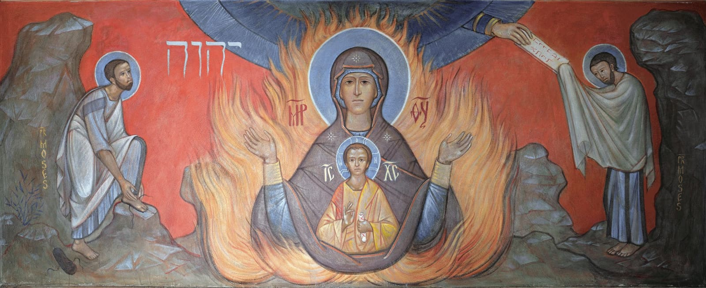

Em Êxodo 3:1, Moisés está pastoreando os rebanhos quando chega a “Horebe, a montanha de Deus”. Contudo, quando os israelitas se reúnem para adorar a Deus, a montanha é chamada de Sinai. Êxodo 3:12 coordena os dois lugares, demonstrando que esses são dois nomes para o mesmo lugar. Esses nomes podem refletir fontes diferentes, intercambialidade ou uma mudança de nome ao longo do tempo.In Exodus 3:1, Moses is tending flocks when he comes to “Horeb, the mountain of God.” Yet when the Israelites gather to worship God, the mountain is called Sinai. Exodus 3:12 coordinates the two locations, demonstrating that these are two names for the same place. These names could reflect different sources, interchangeability, or a name change over time.
Explicações possíveis para o uso do nome Horebe incluem:Possible explanations for the use of the name Horeb include:
Explicações possíveis para o uso do nome Sinai incluem:Possible explanations for the use of the name Sinai include:
A preocupação de Deus por Israel emoldura o encontro de Moisés na sarça ardente (Êx. 2:23-35 e 3:6-10). Uma das imagens que essa moldura literária cria é a da sarça representando Israel em meio à opressão ardente no Egito (cf. “fornalha de ferro” em Dt. 4:20; 1 Rs. 8:51; Jr. 11:3-4). Embora estejam nas chamas, eles não serão consumidos.God's concern for Israel frames Moses' encounter at the burning bush (Exod. 2:23-35 and 3:6-10). One image this literary frame creates is that of the bush representing Israel in the midst of fiery oppression in Egypt (cf. “iron furnace” in Deut. 4:20; 1 Kgs. 8:51; Jer. 11:3-4). Though they are in the flames, they will not be consumed.
Para mais informações, veja Janzen, J. Gerald (2003). "And the Bush Was Not Consumed." Jewish Bible Quarterly, 31. 219-25.For more information, see Janzen, J. Gerald (2003). "And the Bush Was Not Consumed." Jewish Bible Quarterly, 31. 219-25.
O’Keefe, Seraphim (2020). Mural para a Capela da Sarça Ardente de São João Clímaco, em Greenville, Carolina do Sul. Orthodox Media.O’Keefe, Seraphim (2020). Mural for the Burning Bush Chapel of St. John of the Ladder in Greenville, South Carolina. Orthodox Media.
Neste mural de Seraphim O’Keefe para a Capela da Sarça Ardente de São João Clímaco, a Virgem Maria mantém as mãos em posição de oração, o que a torna como um cálice para receber a carne e o sangue de Cristo. Os dois encontros de Moisés com Deus no Sinai, nos quais Deus revelou seu nome e seus mandamentos, emolduram o ícone.In this mural by Seraphim O’Keefe for the Burning Bush Chapel of St. John of the Ladder, the Virgin Mary holds her hands in a prayer position that makes her like a chalice to receive Christ’s flesh and blood. Moses’ two encounters with God at Sinai, in which God revealed his name and his commands, frame the icon.
Esse ícone reflete uma tradição centenária de associar a sarça ardente a Maria (por exemplo, Gregório de Nissa). Ela também tinha a glória de Deus dentro de si, mas isso não a consumiu.This icon reflects a centuries’ old tradition of associating the burning bush with Mary (e.g., Gregory of Nyssa). She, too, had the glory of God within her, but it did not consume her.
Para mais informações, veja Davis, Ellen F. (2001). Getting Involved with God: Rediscovering the Old Testament. Cowley. 45-49.For more information, see Davis, Ellen F. (2001). Getting Involved with God: Rediscovering the Old Testament. Cowley. 45-49.
Deus chama o nome de Moisés duas vezes, “Moisés, Moisés”, espelhando o chamado de Abraão, Jacó e Samuel (veja Gn. 22:1-11, 31:11; 46:2; e 1 Sm. 3:4). A resposta de Moisés, "Eis-me aqui", indica sua total disponibilidade e compromisso com Deus.God calls Moses' name twice, “Moses, Moses,” mirroring the call of Abraham, Jacob, and Samuel (see Gen. 22:1-11, 31:11; 46:2; and 1 Sam. 3:4). Moses' response, "Here I am," indicates his full availability and commitment to God.
Deus revela seu nome a Moisés em três declarações.God reveals his name to Moses in three statements.
Essas três declarações criam expectativa ao revelar gradualmente o nome pessoal de Deus. Deus dará conteúdo concreto ao significado de seu nome agindo em favor deles (veja Êx. 34:6-7).These three statements create anticipation by gradually unveiling the personal name of God. God will flesh out the meaning of his name by acting on their behalf (see Exod. 34:6-7).
Para mais informações, veja Surls, Austin (2017). "Making Sense of the Divine Name in the Book of Exodus: Etymology to Literary Onomastics." Bulletin for Biblical Research Supplement, 17. Eisenbrauns.For more information, see Surls, Austin (2017). "Making Sense of the Divine Name in the Book of Exodus: Etymology to Literary Onomastics." Bulletin for Biblical Research Supplement, 17. Eisenbrauns.
Por que Moisés pergunta o nome de Deus?Why does Moses ask God’s name?

Reflita sobre o encontro de Moisés com Deus na sarça ardente. O que você percebe que não havia visto antes?Reflect on Moses’ encounter with God at the burning bush. What do you notice that you had not seen before?